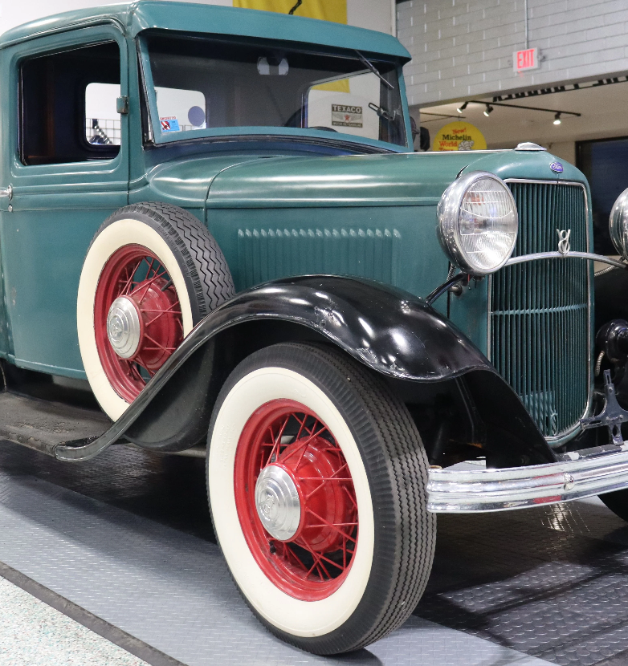

Brett Huffman
High Impact Software Design, Development and Teaching
I am passionate about entrepreneurship, technology, and working on old cars. I try to give back to the development community by teaching students software development. If that's not enough, I am also a PhD Candidate.
Leadership
Throughout my career I've always gravitated to helping lead teams achieve great things.
In the Navy I started at the very lowest enlisted rank and worked my way up to an officer. I found myself responsible for helping to build flight tracking software responsible for many thousands of people.
More recently, I have started several software companies, including Summertime Software, Inc and StarterData, Inc. Both companies were focused on Real Estate-related software. I love finding new ways to help solve complex tasks in Real Estate.
I have also been the Chief Technology Officer and Product Manager for Ticor Title and then ServiceLink. During that time I helped to build a large-scale deployment of new in-house systems and to implement many cost-saving measures.
Technology Skills
My strongest technology skill is my desire to learn. I want to spend every moment learning and inventing the technology of our time.
In college I found out how much I didn't already know. Computing is an enormous field and one could spend a lifetime trying to explore it all. I went to USC (Undergrad), Texas A&M (Masters) and am currently a Doctorial student at University of Missouri, St Louis.
My technical expertise involves:
- AI/Machine Learning - Tensorflow, Keras, and JAX. Building, training and evaluation
- SQL - Database design, optimization, and query performance tuning
- C# & .NET - Enterprise-level applications, APIs, and back-end development
- Node.js - Scalable server-side solutions and microservices
- C++ - High-performance computing and system-level programming
- JavaScript - Interactive web applications and full-stack development
- And much more
Tell me about your digital life. I'm always excited to hear other's explorations.
Analog Life
With so much time being spent working in the digital world, I found I needed more "tangible experiences." On my off time I enjoy working on old cars, golfing and running.
I've had several old cars, but am currently working on just one:
1932 Ford Pickup
This may seem like a funny focus, but this is a very special truck. It was built during the final, toughest years of the depression. Many didn't have the money to buy a new pickup, so sales were down compared to prior years. Fast forward 100 years and this helps make the 1932 Ford a very sought-after year.